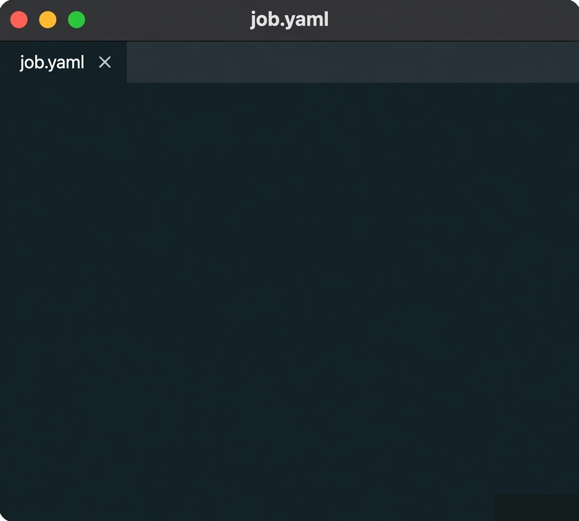

FOR ANYONE WHO TRAINS MODELS ON A MACHINE THEY ALREADY HAVE
A local CLI
model: llama-8b data: ./corpus steps: 1000 optimizer: adamw learning_rate: 0.001 batch_size: 32
Troy is a CLI you install locally. Training is specified in a YAML file, not in a notebook, a dashboard, or a rented cluster.
The example on this page is labeled synthetic. Replace it with your model, your corpus, your steps. Troy does not invent a hosted trainer around it.
There is no GitHub URL or install script published yet. The command you copy is the verb: troy train job.yaml.
Proof (customers, benchmarks, a public binary) does not exist yet. This page will not invent it.